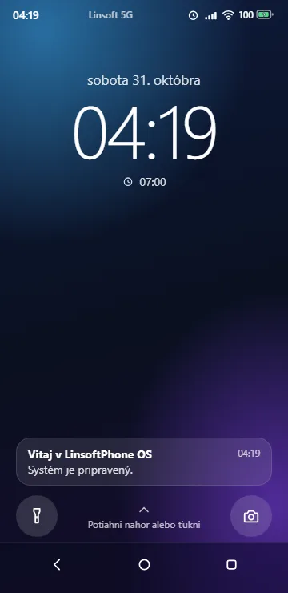
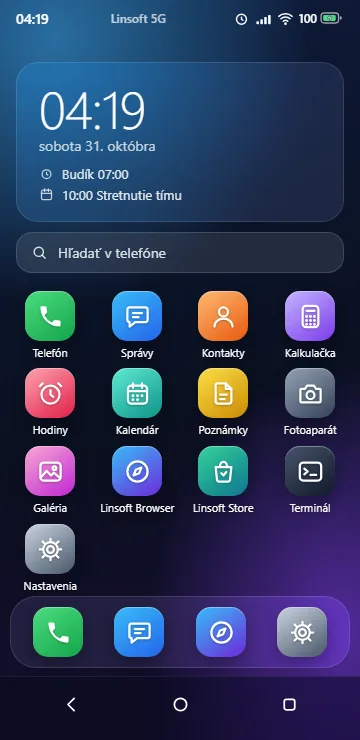
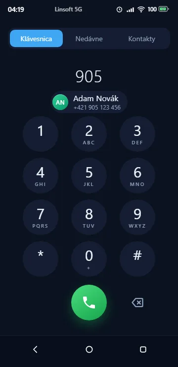
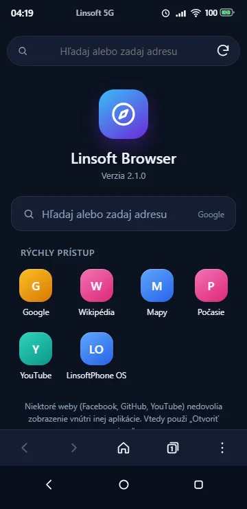
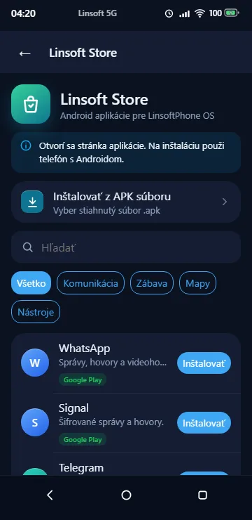
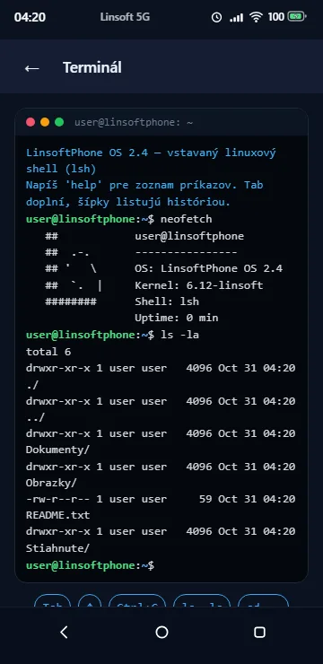
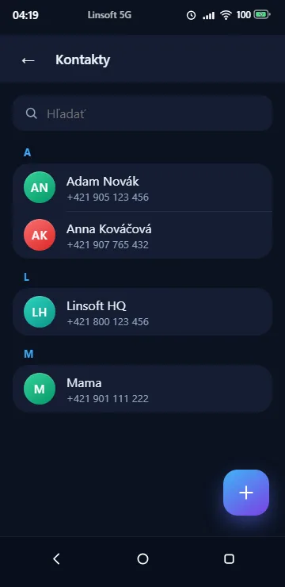
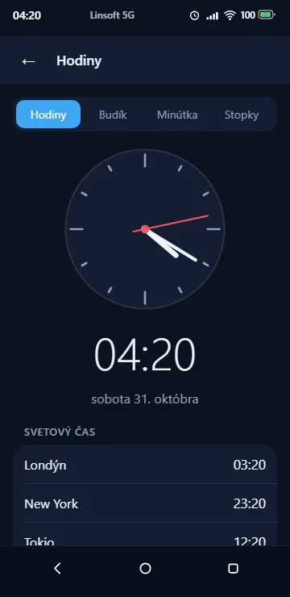
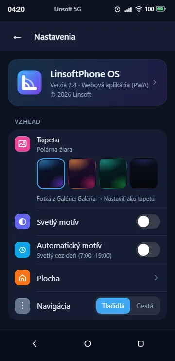

Telefón a Správy
Klávesnica s písmenami, zoznam hovorov, konverzácie ako v chate. Na vlastnom systéme volá a posiela SMS priamo cez modem.
Verzia 2.4 · zadarmo · otvorený kód
LinsoftPhone OS je vlastný operačný systém pre smartfóny. Spustíš ho v prehliadači ktoréhokoľvek telefónu, nahráš ho do telefónu namiesto Androidu, alebo naštartuješ jeho vlastné jadro pre ARM.
Živá ukážka — vyskúšaj myšou alebo prstom
Dvanásť vlastných aplikácií, jednotný vzhľad a žiadne reklamy.
Klávesnica s písmenami, zoznam hovorov, konverzácie ako v chate. Na vlastnom systéme volá a posiela SMS priamo cez modem.
Karty, súkromné karty, záložky, našepkávač a YouTube priamo v prehliadači. Stránky bežia oddelene od systému.
Android aplikácie z Google Play a F-Droid, alebo vlastný stiahnutý APK. Na vlastnom systéme sa inštalujú do Waydroidu.
Výzva user@linsoftphone:~$, rúry, presmerovanie, Tab a história. Na telefóne s postmarketOS je to skutočný shell.
PIN zámok, dáta zostávajú v telefóne, záloha do súboru. Bez účtov, bez sledovania, bez reklám.
Predná aj zadná kamera, samospúšť, blesk. Galéria po dňoch, posúvanie prstom, zdieľanie a tapeta z fotky.
Budíky podľa dní, kruhová minútka, stopky s kolami, svetový čas. Udalosti s časom a widget „Dnes“ na ploche.
Tapety aj z vlastnej fotky, svetlý, tmavý a automatický motív, poradie ikon, navigácia tlačidlami alebo gestami.
Od prehliadača až po vlastné jadro.
Otvor stránku na ľubovoľnom smartfóne a daj „Pridať na plochu“. Funguje offline a aktualizuje sa sám.
Android · iPhone · počítač
Spustiť →Na telefónoch s postmarketOS nahradí Android. Po zapnutí naštartuje rovno LinsoftPhone OS a skutočne volá, píše SMS a pripája sa na Wi-Fi.
postmarketOS · stovky modelov
Návod →Mini operačný systém pre ARM napísaný v C a assembleri: grafika, prerušenia, hodiny, klávesnica a dotyk. Beží v QEMU.
ARMv7 · QEMU · kernel 1.3
Zdrojový kód →








Inštalácia zmaže celý telefón a väčšinou treba odomknúť bootloader. Vyskúšaj to najprv na starom telefóne.
pmbootstrap a stiahni tento repozitár.pmbootstrap init # vyber telefón
sh postmarketos/priprav.sh # vloží LinsoftPhone OS
pmbootstrap init # ako UI zvoľ: linsoft
pmbootstrap install
pmbootstrap flasher flash_rootfs && pmbootstrap flasher flash_kernelCelý postup: postmarketos/README.md
Kernel pre ARM sa zostaví kompilátorom zig a spustí v emulátore QEMU (Windows):
.\build.ps1 # zostaví kernel.elf
.\run.ps1 # QEMU s displejom, klávesnicou a dotykomPríkazy v termináli: pomoc, info, datum, kalk (2+3)*4, klavesnica sk.
Hotové súbory LinsoftPhone OS. Hostované na GitHub Releases, zadarmo.
Celý LinsoftPhone OS na postmarketOS (Linux) pre počítač x86-64 alebo virtuálny stroj. Naštartuje rovno do zamknutej obrazovky.
linsoftphone-os-2.4-qemu-amd64.img.xz · 373 MB
Zapíše obraz na USB kľúč alebo SD kartu, alebo pripraví linsoftPhone.img pre VirtualBox / QEMU. Sám stiahne a overí najnovší obraz. Windows aj Linux, potrebuje Python.
linsoftphone-installer-1.0.zip · 8 kB
Vlastné jadro LinsoftPhone OS pre QEMU (ARMv7).
linsoftphone-kernel-1.3.elf · 207 kB
LinsoftPhone OS na vlastný webový server (potrebuje HTTPS).
linsoftphone-os-2.4-web.zip · 289 kB
xz -d linsoftphone-os-2.4-qemu-amd64.img.xz
qemu-system-x86_64 -enable-kvm -m 3G -smp 2 \
-bios /usr/share/ovmf/OVMF.fd \
-drive file=linsoftphone-os-2.4-qemu-amd64.img,format=raw,if=virtio \
-device virtio-vga -device virtio-tablet-pci -device virtio-keyboard-pciPrihlásenie (napr. cez SSH alebo konzolu): používateľ user, heslo 147147 — po prvom spustení ho zmeň príkazom passwd.
Pre konkrétny telefón sa obraz zostavuje zvlášť — pozri Inštaláciu → Ako systém telefónu. Kontrolné súčty: SHA256SUMS · všetky vydania
Áno. Celý systém je zadarmo a jeho zdrojový kód je na GitHube.
Nie na každom. Ako samostatný systém beží na telefónoch, ktoré podporuje postmarketOS, a hovory a SMS fungujú len tam, kde postmarketOS ovláda modem. V prehliadači beží na každom smartfóne.
Na telefóne s Androidom ich Linsoft Store otvorí v Google Play alebo F-Droid. Na vlastnom systéme ich inštaluje do Waydroidu (aplikácie z F-Droid a vlastné APK). Na iPhone Android aplikácie nejdú.
Iba v tvojom telefóne. LinsoftPhone OS nemá žiadne účty ani server. Zálohu si urobíš v Nastaveniach do súboru.
V prehliadači zvoní len vtedy, keď je LinsoftPhone OS otvorený — webová aplikácia nemôže zobudiť zamknutý telefón.
Netreba nič inštalovať — stačí prehliadač.
Spustiť LinsoftPhone OS